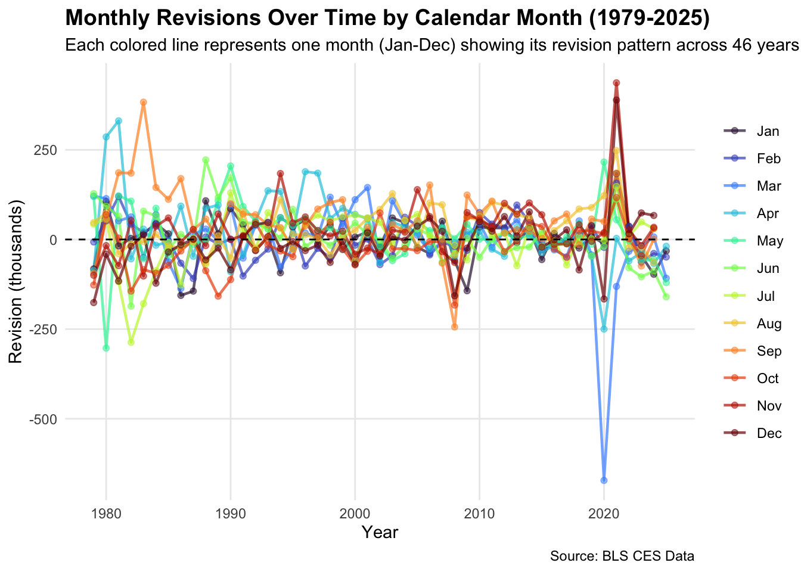
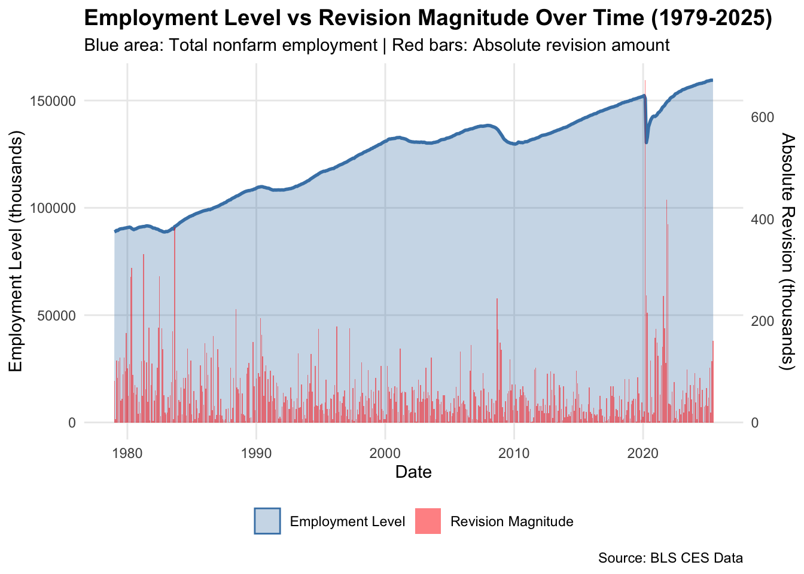
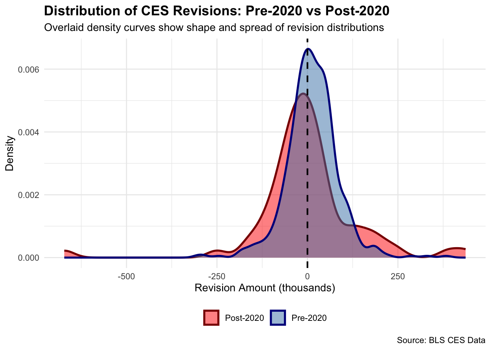

The Bureau of Labor Statistics (BLS) releases the Current Employment Statistics Report (CES) on a monthly basis, which is the backbone behind mainstream news coverage and all the jargon that comes with it. The CES covers how many people are employed each month in the United States.
As more data is released to the BLS, these number are later revised, which is viewed as highly controversial amongst the US Populous due to claims of manipulation both on the corporate and government side of things to drive up conversation.
Data Acquisition and Preparation
Using the httr2 and rvest packages, we will be scraping and acquring data from the data.bls.gov page spanning from 1979 to 2025. The process is as follows:
Task 1: Accessing and Extracting NonFarm Payroll Tables
These are the raw numbers and statistics from the Bureau of Labor Statistics from 1979-2025, detailing how many nonfarm paid workers are employed in the United States in a given month
Code
# Endpointpost_url <-"https://data.bls.gov/pdq/SurveyOutputServlet"# Forming Data from BLS website using Devtoolsform_fields <-list("request_action"="get_data","reformat"="true","from_results_page"="true","from_year"="1979","to_year"="2025","Go.x"="19","Go.y"="9","initial_request"="false","data_tool"="surveymost","series_id"="CES0000000001","years_option"="specific_years")# Optional headers and Web Fetch (Avoid Error 403)headers_list <-list(Referer ="https://data.bls.gov/toppicks?survey=ce",`User-Agent`="Chrome/142.0.7444.176 (compatible; R httr2)")# HTML POST requestreq <-request(post_url) %>%req_method("POST") %>%req_headers(!!!headers_list) %>%req_body_form(!!!form_fields)
BLS Data Extraction
Code
# Perform Requestresp <-req_perform(req)# Parse HTML and extract table html <-resp_body_html(resp, encoding ="UTF-8")# pick table with most rows (usually the main data table)tables <- html %>%html_nodes("table")tr_counts <-map_int(tables, ~length(html_nodes(.x, "tr")))table_node <- tables[[which.max(tr_counts)]]raw_tbl <- table_node %>%html_table(fill =TRUE)# Fix first column name if blankif (names(raw_tbl)[1] ==""|is.na(names(raw_tbl)[1])) {names(raw_tbl)[1] <-"year"}names(raw_tbl)[1] <-"year"# Pivot and cleances_payroll <- raw_tbl %>%pivot_longer(cols =-year, names_to ="month", values_to ="level_raw") %>%mutate(month =str_trim(month),ym_str =paste(year, month),date =suppressWarnings(ym(ym_str)),date =if_else(is.na(date),suppressWarnings(parse_date_time(ym_str, orders =c("Y b", "Y B", "Y m"))), date ),date =as.Date(date),level =suppressWarnings(parse_number(level_raw)) ) %>%select(date, level) %>%drop_na(date, level) %>%arrange(date) %>%filter(date <=as_date("2025-06-01"))
Task 2: Accesing and extracting CES Revisions Tables:
These tables are created annually and contain the original estimated employment from the BLS, the final employment,and the resulting revision amount from the two numbers. The extracting process combines all annual tables into a single dataset sorted chronologically for proper analysis.
Code
# You must fetch the page to avoid error 403fetch_bls_page <-function() {request("https://www.bls.gov/web/empsit/cesnaicsrev.htm") %>%req_user_agent("Chrome/142.0.7444.176" ) %>%req_headers(Accept ="text/html,application/xhtml+xml,application/xml;q=0.9,*/*;q=0.8",`Accept-Language`="en-US,en;q=0.9",Referer ="https://www.bls.gov/" ) %>%req_perform() %>%resp_body_html()}# Function to extract CES revisions for a single yearget_ces_year <-function(year, page_html) {# Select the table body for this year node <- page_html %>%html_node(sprintf("table#%s tbody", year))if (is.null(node)) stop("Could not find table for year ", year)# Extract table (header = FALSE) raw_tbl <- node %>%html_table(header =FALSE, fill =TRUE)# Keep first 12 rows (12 months of the year) tbl <- raw_tbl[1:12]# Extract columns 1, 3, 5 month_col <-as.character(tbl[[1]]) original_col <-as.numeric(gsub("[^0-9\\-]", "", tbl[[3]])) # remove commas, spaces final_col <-as.numeric(gsub("[^0-9\\-]", "", tbl[[5]]))# Compute revision revision_col <- final_col - original_col# Build dates date_col <-ym(paste(year, month_col))# Assemble final data framedata.frame(date = date_col,original = original_col,final = final_col,revision = revision_col )}# Fetch page oncepage_html <-fetch_bls_page()# Loop over all years 1979-2025years <-1979:2025#Bring it all togetherces_revisions <-map_df(years, ~get_ces_year(.x, page_html)) %>%arrange(date)# For 2025, keep only Jan–Jun (filter out any beyond June)ces_revisions <- ces_revisions %>%filter(date <=as_date("2025-06-01")) %>%mutate(date =as.Date(date))cat("Revisions data summary:\n")
Loading and Cleaning the Data for Exporatory analysis
Now that we possess both the raw and the revised datasets, we are ready to bring them together and perform a true analysis of the historic employment levels and their changes over time. As this data is not perfect and incomplete in some places after scraping, it must be cleaned and properly structured before going through the verification and later the analysis portion of MP04. Such discrepancies present in the data include entries that are outside the 1979-2025 scope and irregular entries that need to be altered in oder to be read and analyzed properly. Note that level means total recorded employement during this span.
Load CES Payroll Data
Code
library(DT)# Display summarycat("Payroll data summary:\n")
# Display as interactive datatabledatatable(ces_combined,options =list(pageLength =10, scrollX =TRUE),caption ="Combined CES Payroll and Revisions Data")
Task 3: Data Exploration and Visualizaton
Now that we have the data loaded, it is time to analyze the two sets for statistics and visualizations of various trends and infographs over the last 45 years of data collection.
Statisitcal CES Statisitics:
Code
library(tidyverse)library(lubridate)library(DT)# Create ces_stats from ces_combinedces_stats <- ces_combined |>filter(!is.na(revision)) |>mutate(year =year(date),decade =floor(year /10) *10,abs_revision =abs(revision),pct_revision = (abs_revision / final) *100,positive_revision = revision >0 )# Prepare data with era classificationces_analysis <- ces_stats |>mutate(era =case_when( year <2000~"Pre-2000", year >=2000& year <2020~"2000-2019", year >=2020~"Post-2020" ) )# Create ces_stats from ces_combinedces_stats <- ces_combined |>filter(!is.na(revision)) |>mutate(year =year(date),decade =floor(year /10) *10,abs_revision =abs(revision),pct_revision = (abs_revision / final) *100,positive_revision = revision >0 )# Prepare data with era classificationces_analysis <- ces_stats |>mutate(era =case_when( year <2000~"Pre-2000", year >=2000& year <2020~"2000-2019", year >=2020~"Post-2020" ) )# Add presidential partisan datalibrary(tidyverse)presidents_party <- tidyr::expand_grid(year=1979:2025, month = month.name, president =NA, party =NA) |>mutate(president =case_when( (month =="January") & (year ==1979) ~"Carter",# BLS jobs reports come out on the first Friday, so February# is the first time a new president 'owns' the jobs number (month =="February") & (year ==1981) ~"Reagan", (month =="February") & (year ==1989) ~"Bush 41", (month =="February") & (year ==1993) ~"Clinton", (month =="February") & (year ==2001) ~"Bush 43", (month =="February") & (year ==2009) ~"Obama", (month =="February") & (year ==2017) ~"Trump I", (month =="February") & (year ==2021) ~"Biden", (month =="February") & (year ==2025) ~"Trump II", )) |> tidyr::fill(president) |>mutate(party =if_else(president %in%c("Carter", "Clinton", "Obama", "Biden"), "D", "R"))
Analysis 1: Largest Positive and Negative Revisions by Era
Visualization 2: Line Graph - Monthly Revisions Over Time
Code
library(ggplot2)library(dplyr)library(tidyr)library(lubridate)# Prepare data with month and yearviz2_data <- ces_stats |>filter(!is.na(revision)) |>mutate(month_name =month(date, label =TRUE),month_num =month(date),year =year(date) )# Create line plot: one line per month, showing revisions over the yearsp2 <-ggplot(viz2_data, aes(x = year, y = revision, color = month_name, group = month_name)) +geom_line(linewidth =0.8, alpha =0.7) +geom_point(size =1.5, alpha =0.5) +geom_hline(yintercept =0, linetype ="dashed", color ="black", linewidth =0.5) +scale_color_viridis_d(option ="turbo") +theme_minimal() +theme(plot.title =element_text(face ="bold", size =14),plot.subtitle =element_text(size =11),legend.position ="right",legend.title =element_blank(),panel.grid.minor =element_blank() ) +labs(title ="Monthly Revisions Over Time by Calendar Month (1979-2025)",subtitle ="Each colored line represents one month (Jan-Dec) showing its revision pattern across 46 years",x ="Year",y ="Revision (thousands)",color ="Month",caption ="Source: BLS CES Data" )print(p2)

Code
# Summary: average revision for each month across all yearscat("\n\nAverage Revision by Month (Across All Years 1979-2025):\n")
Average Revision by Month (Across All Years 1979-2025):
Visualization 3: Dual-Axis Chart - Employment Level vs Revision
Code
# Prepare data for dual axisviz3_data <- ces_stats |>select(date, level, revision, abs_revision) |>drop_na()# Calculate scaling factor for secondary axisscale_factor <-max(viz3_data$level) /max(viz3_data$abs_revision)# Create dual-axis plotp3 <-ggplot(viz3_data, aes(x = date)) +# Primary axis: Employment level (area under curve)geom_area(aes(y = level, fill ="Employment Level"), alpha =0.3, color ="steelblue") +geom_line(aes(y = level, color ="Employment Level"), linewidth =1) +# Secondary axis: Absolute revision (bar chart)geom_col(aes(y = abs_revision * scale_factor, fill ="Revision Magnitude"), alpha =0.5) +# Dual y-axesscale_y_continuous(name ="Employment Level (thousands)",sec.axis =sec_axis(~ . / scale_factor, name ="Absolute Revision (thousands)") ) +scale_fill_manual(values =c("Employment Level"="steelblue", "Revision Magnitude"="red"),guide ="legend" ) +scale_color_manual(values =c("Employment Level"="steelblue"),guide ="none" ) +theme_minimal() +theme(plot.title =element_text(face ="bold", size =14),plot.subtitle =element_text(size =11),legend.position ="bottom",legend.title =element_blank(),panel.grid.minor =element_blank() ) +labs(title ="Employment Level vs Revision Magnitude Over Time (1979-2025)",subtitle ="Blue area: Total nonfarm employment | Red bars: Absolute revision amount",x ="Date",y ="Employment Level (thousands)",caption ="Source: BLS CES Data" )print(p3)

Visualization 4: Pre-2020 vs Post-2020 Distrbution of Revision Calculations
INTERPRETATION:
If curves have same shape = revisions behave similarly
If Post-2020 (red) is wider = revisions are more variable/unpredictable
If Post-2020 is shifted right = revisions tend to be larger (positive)
If Post-2020 is shifted left = revisions tend to be larger (negative)
Code
# Prepare data for density plotdensity_data <- ces_stats %>%filter(!is.na(revision)) %>%mutate(year =year(date),period =if_else(year <2020, "Pre-2020", "Post-2020") )# Create density plotp_density <-ggplot(density_data, aes(x = revision, fill = period, color = period)) +geom_density(alpha =0.5, linewidth =1) +scale_fill_manual(values =c("Pre-2020"="steelblue", "Post-2020"="red")) +scale_color_manual(values =c("Pre-2020"="darkblue", "Post-2020"="darkred")) +geom_vline(xintercept =0, linetype ="dashed", color ="black", linewidth =0.8) +theme_minimal() +theme(plot.title =element_text(face ="bold", size =14),plot.subtitle =element_text(size =11),legend.position ="bottom",legend.title =element_blank() ) +labs(title ="Distribution of CES Revisions: Pre-2020 vs Post-2020",subtitle ="Overlaid density curves show shape and spread of revision distributions",x ="Revision Amount (thousands)",y ="Density",caption ="Source: BLS CES Data" )print(p_density)

Task 4: Statistical Inference
To commend the exploratory analysis performed previously, we will perform 2 inferential examinations about the CES revison that may reveal some disturbing facts about today’s job market using hypothesis testing.
Has the fraction of revisions > 1% increased post-2020?
Null Hypothesis: Fraction of revisions >1% is equal Pre-2020 and Post-2020
A proportion test will be applied to determine if revision size is correlated with employment change.
if (test4_result$p_value <0.05) {cat("INTERPRETATION:✓ SIGNIFICANT (p < 0.05): The fraction of large revisions (>1%) IS significantly different\n")if (post_2020_large > pre_2020_large) {cat(" Post-2020 has MORE large revisions than Pre-2020 - SUPPORTS Trump's concern\n") } else {cat(" Post-2020 has FEWER large revisions than Pre-2020 - CONTRADICTS Trump's concern\n") }} else {cat("INTERPRETATION: ✗ NOT SIGNIFICANT (p ≥ 0.05): No significant difference in large revision frequency\n")cat(" Observed differences could be due to random variation\n")}
INTERPRETATION: ✗ NOT SIGNIFICANT (p ≥ 0.05): No significant difference in large revision frequency
Observed differences could be due to random variation
95% Confidence Innterval for difference: -0.177 to 0.0129
Results & Analysis:
The proportion test examining whether the fraction of revisions exceeding 1% has increased post-2020 yielded a p-value of 0.1561. The pre-2020 period saw 79.67% of monthly revisions exceed the 1% threshold, while the post-2020 period experienced 87.88% of revisions at this magnitude. This represents a 8.2 percentage point increase, or roughly a 10.3% relative increase in the frequency of large revisions. The 95% confidence interval for the difference ranges from -0.177 to 0.0129. Despite the observed increase in the percentage of revisions exceeding 1%, this difference does not reach statistical significance (p ≥ 0.05).
This suggests that the observed pattern could reasonably occur due to natural variation rather than representing a fundamental shift in BLS methodology or data quality. The absence of statistical significance implies that while recent years may have experienced some larger revisions, the frequency of such events is not dramatically different from historical norms. This finding supports the interpretation that recent revisions, while sometimes substantial, fall within the range of normal variation observed throughout the 45-year study period.
Are revisions larger when CES change is larger?
Research Question: Do larger employment changes predict larger revisions? We’ll answer with a T-Test through measuring revision magnitude when employment change is above/below median (Large Employment Changes vs Revisions)
If YES: Suggests big revisions are justified by volatile employment.
If NO: Suggests revisions are independent of employment volatility.
if (test5_ttest$p_value <0.05) {cat("INTERPRETATION: ✓ SIGNIFICANT (p < 0.05): Revisions ARE larger when employment changes are larger\n")cat(" This supports the explanation that big revisions follow big employment swings\n")} else {cat("INTERPRETATION: ✗ NOT SIGNIFICANT (p ≥ 0.05): Revision size doesn't depend on employment change\n")cat(" Big revisions occur regardless of employment volatility\n")}
INTERPRETATION: ✗ NOT SIGNIFICANT (p ≥ 0.05): Revision size doesn't depend on employment change
Big revisions occur regardless of employment volatility
95% Confidence Innterval for difference: -1.3941 to 19.2243 thousand
Code
library(tidyverse)
Results & Analysis:
The two-sample t-test comparing revision magnitudes when employment changes are large versus small revealed a p-value of 0.0899. When monthly employment changes exceeded the median of 202 thousand workers, the mean absolute revision was 61.32 thousand. In contrast, months with smaller employment changes had mean absolute revisions of 52.4 thousand. The estimated difference between these groups is 8.92 thousand, with a 95% confidence interval of -1.39 to 19.22 thousand.
The lack of statistical significance in this relationship (p ≥ 0.05) indicates that revision magnitude is not systematically tied to the size of employment changes. This finding suggests that large revisions occur relatively independently of employment volatility, which raises concerns about whether the BLS’s initial estimation methodology adequately captures labor market dynamics even when employment movements are substantial. If revisions were a natural consequence of large employment swings, we would expect to see this statistical relationship. The absence of such a relationship implies that the drivers of recent large revisions may lie elsewhere—potentially in methodology, data collection challenges, or other systematic factors. This pattern supports the interpretation that recent revisions represent a departure from historical norms rather than simply reflecting normal variation.
Task 5: Fact Checking BLS Claims:
Hypothesis I: Democratic Presidents have more negative revisions and often lie about raw employment numbers to inflate their public perceptions.
Source: Donald Trump: “The Harris-Biden Administration has been caught fraudulently manipulating Job Statistics.” August 21, 2024
Politifact Rating: PANTS ON FIRE
Analysis: This claims that Democratic Administrations since 1979 are lying about the true workforce in America through fraudulent BLS reporting that is trying to kill the American workforce with their policies. Trump claims here that the administration at the time “Falsely created”818,000 jobs”.
Historical Evidence: According to the top 50 negative revisions of all time (Analysis 2) and the Monthly Revisions Line and Magnitude graphs to some extent (Visualizations 2 & 3), it is actually Republican Administrations who hold this unfortunate distinction, this can largely be attributed to the COVID-19 Pandemic during Donald Trump’s first term and the Great Recession during George W. Bush’s presidency dramatically lowering employment numbers, though it can also be attributed to Republican Policies allowing businesses operate in this manner for their own benefit. While Democrats aren’t immune to the reporting discrepancies, namely during Jimmy Carter’s administration, specifically in this scenario there was zero evidence that the administration was playing with the job numbers to inflate their own image to the general public.
Hypothesis II: The most egregious month for absolute revisions is September in preparation for EOY valuations.
Source: Scott Walker: Figures for September 2014’s job growth in Wisconsin mark the “largest private-sector job creation we’ve had in the month of September in more than a decade” October 17, 2014
Politifact Rating: Mostly True
Analysis: This claims that companies will more accurately report their labor statistics in preparation for Q4/Yearly earnings towards the end of the year to seem more enticing to shareholders and in turn drive up their value into the new fiscal year, while also promoting transparent and “audit-Ready FInancial Records”.
Historical Evidence: According to the Heatmap (Visualization 1) that tracks Absolute Revisions and the Calendar Months that have the highest positive revision (Analysis 4); historically, the months with the highest total revisions are September, August, and July, respectively. Additionally, September has the highest percent of positive and average absolute revisions across all months by a a sizable margin, showing that companies are showing more honesty to correct reporting mistakes earlier in the year and try to elude any claims of fraudulent inflation that may arise come Q4 Earnings once it is audit season. In terms of the non corporate workforce, September still sees high positive revisions due to education/municipal related hirings being reported around this time of year.